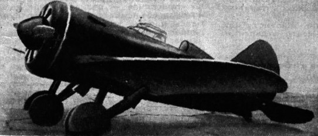

И-16, как и его собрат, биплан И-15, был разработан в начале 1930-х годов КБ Поликарпова.
Несмотря на различие принципиальных схем, эти самолёты имели много общего. Так, в обоих были использованы радиальные поршневые двигатели, что придавало им соответствующую "пухлую" форму и создавало высокое сопротивление, не позволявшее этим самолётам перешагнуть по скорости рубеж в 500 км/ч. Самолёт имел проблемы с управляемостью, вызванные задней центровкой, полученной вследствие размещения оборудования и брони за кабиной пилота. За счет этого не могло быть и речи о полете на И-16 с отпущенной ручкой управления — пилот всегда пребывал в напряжении, что также сказывалось на боевой эффективности самолёта. Несмотря на многие проблемы, в воздушном бою на высоте 3000 метров И-16 был способен эффективно противостоять ранним моделям Bf.109, слегка выигрывая у последнего в горизонтальных маневрах, но проигрывая в скорости и на вертикальных маневрах.
К началу Великой Отечественной войны И-16 составлял 2/3 всей истребительной авиации Советских ВВС. С этих самолётов начинали множество известных советских летчиков. Всего было выпущено более десяти тысяч И-16 всех модификаций. Кроме задач истребителя, И-16 также выполнял работу штурмовика, будучи оснащенным 6 ракетами РС-82 или бомбовой нагрузкой до 500 кг.